Using
Large Language Models
with Python
- Press O or Escape for overview mode.
- Visit this link for a nice printable version
- Press the copy icon on the upper right of code blocks to copy the code
About me
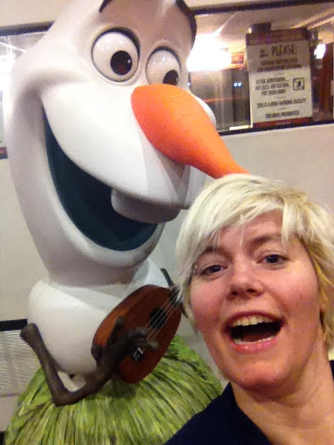Python Cloud Advocate at Microsoft
Formerly: UC Berkeley, Khan Academy, Woebot, Coursera, Google
Find me online at:
| Mastodon | @pamelafox@fosstodon.org |
| @pamelafox | |
| GitHub | www.github.com/pamelafox |
| Website | pamelafox.org |
LLMs & GPTs

The history of AI
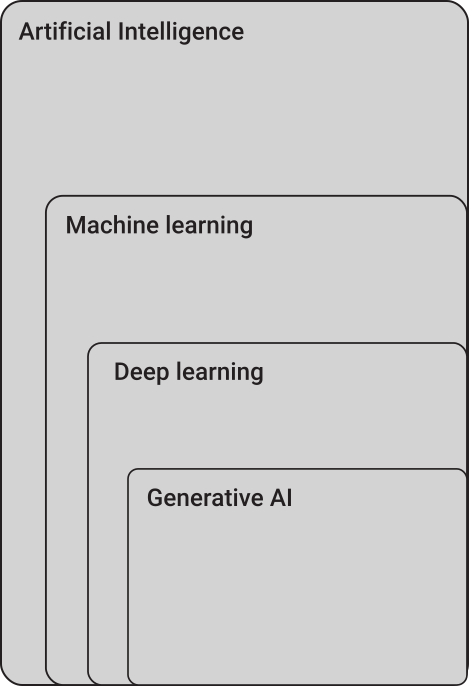- 1956: Artificial Intelligence​:
The field of computer science that seeks to create intelligent machines that can replicate or exceed human intelligence - 1997: Machine Learning:​
Subset of AI that enables machines to learn from existing data and improve upon that data to make decisions or predictions​ - 2017: Deep Learning​:
A machine learning technique in which layers of neural networks are used to process data and make decisions​ - 2021: Generative AI:
Create new written, visual, and auditory content given prompts, often using Large Language Models or Diffusion models
Large Language Models (LLMs)
An LLM is a model that is so large that it achieves general-purpose language understanding and generation.


Generative Pretrained Transformer (GPT)

GPT models are LLMs based on Transformer architecture from:
📖 "Attention is all you need" paper
by Google Brain
Learn more:
- Andrej Karpathy: 🎥 State of GPT
- Andrej Karpathy: 🎥 Let's build GPT: from scratch, in code
You've probably used an LLM...
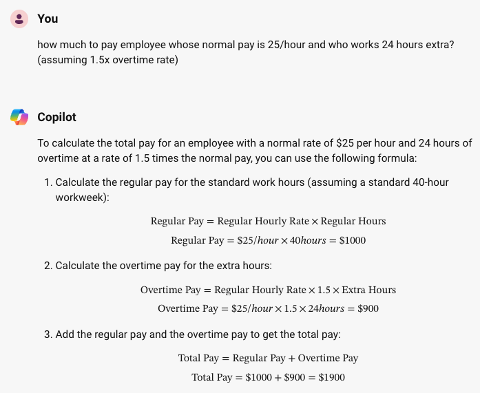 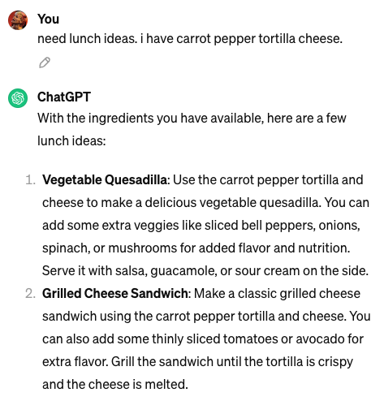
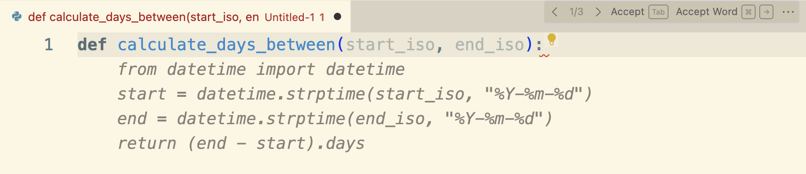
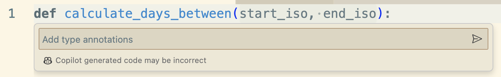
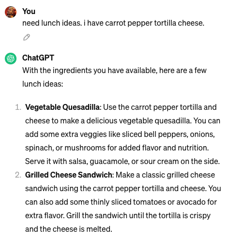
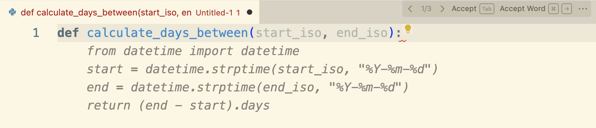
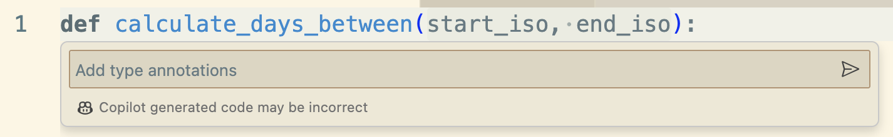
ChatGPT, GitHub Copilot, Bing Copilot, and many other tools are powered by LLMs.
Hosted Large Language Models
Hosted LLMs can only be accessed via API, from a company hosting the model and infrastructure for you.
| Company | Model | Parameters |
|---|---|---|
| OpenAI | GPT-3.5 | 175B |
| OpenAI | GPT-4 | Undisclosed |
| PaLM | 540B | |
| Gemini 1, 1.5 | Undisclosed | |
| Anthropic | Claude 3 family | Undisclosed |
Demo: Azure OpenAI Playground
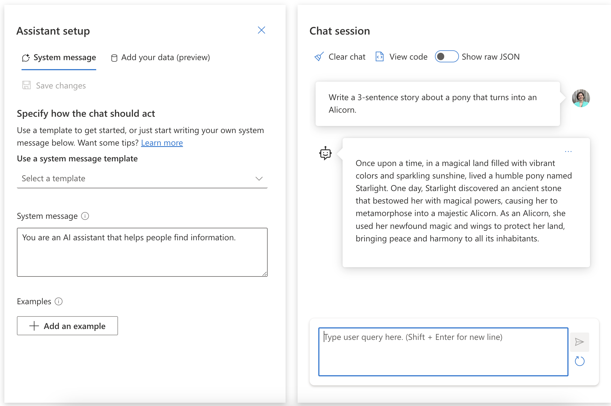Local LLMs
A local LLM can be downloaded and used by anyone, as long as they have the computational resources to run it.
| Company | LLM | Parameters |
|---|---|---|
| Meta | Llama 2 | 7b, 13b, 70b |
| Gemma | 2b, 7b | |
| Microsoft research | Phi-2 | 2.7b |
| Mistral AI | Mistral | 7b |
| Mistral AI | Mixtral | 8x7b |
| Researchers | Llava | 7b, 13b, 34b |
Demo: Ollama
Ollama is a tool for easily running local LLMs on your computer.

Using LLMs
in Python

OpenAI API
Request access from openai.com or Azure OpenAI.
Once you have access, you can use the API from Python or any other language.
Install the OpenAI Python library:
pip install openai
OpenAI API authentication
For openai.com OpenAI, set your API key:
client = openai.OpenAI(api_key="your-api-key")
For Azure OpenAI, use Azure default credentials:
azure_credential = azure.identity.DefaultAzureCredential()
token_provider = get_bearer_token_provider(azure_credential,
"https://cognitiveservices.azure.com/.default")
client = openai.AzureOpenAI(
api_version="2024-03-01-preview",
azure_endpoint=f"https://your-openai-service.openai.azure.com",
azure_ad_token_provider=token_provider,
)
Using OpenAI APIs with Ollama
Configure the client to point at local server:
client = openai.OpenAI(
base_url="http://localhost:11434/v1",
api_key="nokeyneeded",
)
Call the Chat Completion API
Using chat completions API:
response = client.chat.completions.create(
model="gpt-3.5-turbo",
messages = [
{"role":"system",
"content":"You are a helpful assistant.."
},
{"role":"user",
"content":"What can I do on my trip to Tokyo?"
}
],
max_tokens=400,
temperature=1,
top_p=0.95)
print(response.choices[0].message.content)
Stream the response
completion = client.chat.completions.create(
stream=True,
messages = [
{"role":"system",
"content":"You are a helpful assistant.."
},
{"role":"user",
"content":"What can I do on my trip to Tokyo?"
}
])
for event in completion:
print(event.choices[0].delta.content)
Use asynchronous calls
Using Python async/await constructs:
response = await client.chat.completions.create(
messages = [
{"role":"system",
"content":"You are a helpful assistant.."
},
{"role":"user",
"content":"What can I do on my trip to Tokyo?"
}
])
Learn more: 📖 Best practices for OpenAI Chat apps: Concurrency
LLMs: Pros and Cons
Pros:
- Creative 😊
- Great with patterns
- Good at syntax (natural and programming)
Cons:
- Creative 😖
- Makes stuff up (unknowingly)
- Limited context window (4K-32K)
Retrieval Augmented Generation

Retrieval Augmented Generation (RAG)
Use a retrieval system to find the best context for the generation model.

Retrieval + Generation
| Retrieval system (Search) | ➡ Generative model (LLM) |
|---|---|
|
|
Demo: OpenAI + Cognitive Search
github.com/Azure-Samples/azure-search-openai-demo

RAG flow
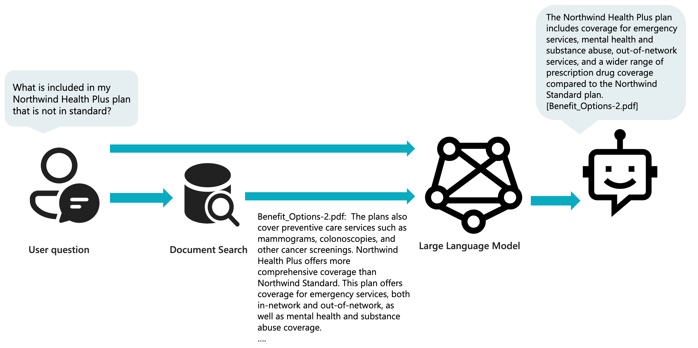RAG: Search step
Query Azure Cognitive Search using both text and vectors:
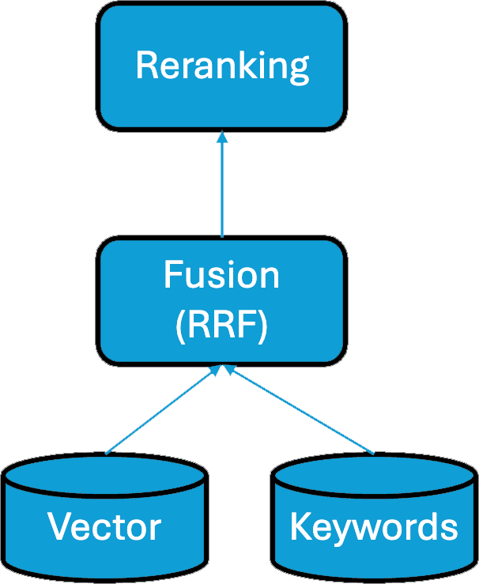
r = await self.search_client.search(
query_text,
query_type=QueryType.SEMANTIC,
top=top,
vector=query_vector,
vector_fields="embedding",
)
results = [doc["sourcepage"] +
": " + doc["content"]
async for doc in r]
content = "\n".join(results)
RAG: Search results
Use the search results to create a prompt for the LLM:
messages = [system_prompt]
messages.extend(few_shots)
user_content = f"{q}\nSources:\n {content}"
messages.append({"role": "user", "content": user_content})
chat_completion = await client.chat.completions.create(
deployment_id=self.chatgpt_deployment,
model=self.chatgpt_model,
messages=messages,
temperature=0.3,
max_tokens=1024,
n=1,
)
Responsible AI

Risks of LLMs
- Ungrounded outputs and errors
- Jailbreaks & prompt injection attacks
- Harmful content & code
- Copyright infringement
- Manipulation and human-like behavior
Mitigation layers
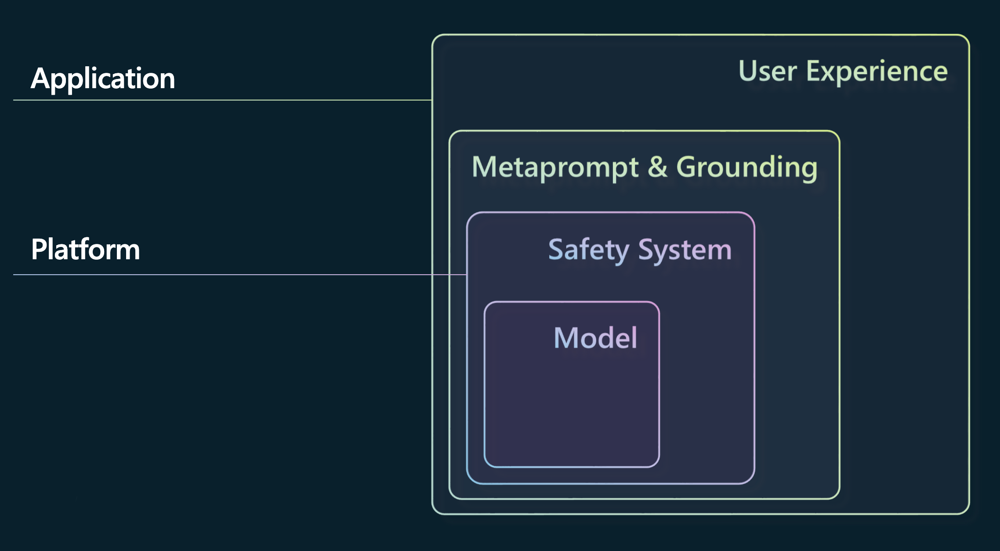Azure AI Content Safety
A configurable system to detect safety violations:

- Detects violations in prompts and responses
- Detects jailbreak attempts
- Detects protected material use
Handling violations in Python
Catch and handle violations in your code:
try:
response = client.chat.completions.create(
model=MODEL_NAME,
messages=[
{"role": "system", "content": "You are helpful."},
{"role": "user", "content": "How to make a bomb?"}
]
)
print(response.choices[0].message.content)
except openai.APIError as error:
if error.code == "content_filter":
print("Please remember our code of conduct.")
More resources
- Explanations:
- Prompting libraries:
- Samples:
Microsoft for Startups Founders Hub
Sign up in minutes at startups.microsoft.com
- Get $150k of Azure credits to access OpenAI GPT-3.5 Turbo and GPT-4 through Azure OpenAI Service
- Experiment with LLMs for free with $2,500 in OpenAI credits
- Receive 1:1 advice from Microsoft AI experts
- Free access to development and productivity tools like GitHub, Microsoft 365, LinkedIn Premium, and more
Any questions?